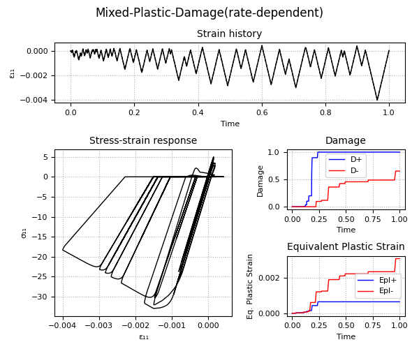
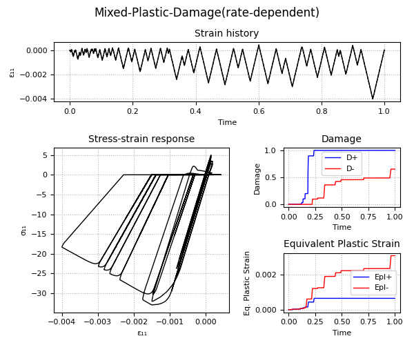
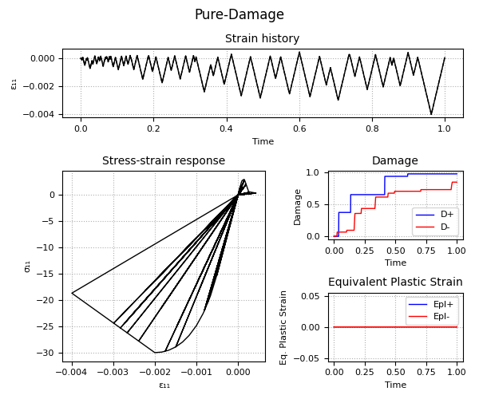
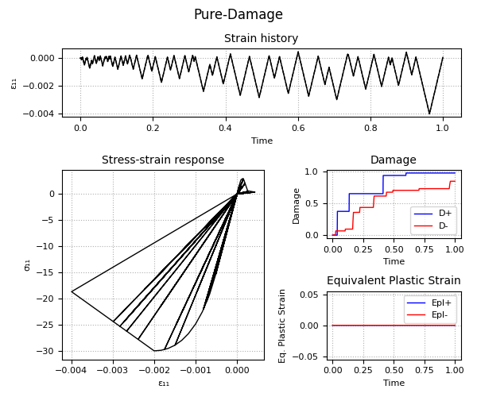

3.1.5.14. ASDConcrete1D Material¶

- uniaxialMaterial ASDConcrete1D $tag $E
- <-fc $fc> <-ft $ft>
- <-Te $Te -Ts $Ts <-Td $Td>>
- <-Ce $Ce -Cs $Cs <-Cd $Cd>>
- <-implex> <-implexControl $implexErrorTolerance $implexTimeReductionLimit> <-implexAlpha $alpha>
- <-eta $eta> <-tangent> <-autoRegularization $lch_ref>
Argument |
Type |
Description |
|---|---|---|
$tag |
integer |
Unique tag identifying this material. |
$E |
float |
Mandatory. Young’s modulus. |
-fc $fc |
string + float |
Optional. -fc: A keyword that precedes the float. $fc: The concrete compressive strength. |
-ft $ft |
string + float |
Optional. -ft: A keyword that precedes the float. $ft: The concrete tension (rupture) strength. |
-Te $Te |
string + list |
Optional. -Te: A keyword that precedes the list. $Te: A list of total-strain values for the tensile hardening-softening law. If not specified, $Te will be computed automatically from $fc and $ft. If specified, $Te will override $fc and $ft. |
-Ts $Ts |
string + list |
Optional. -Ts: A keyword that precedes the list. $Ts: A list of stress values for the tensile hardening-softening law. If not specified, $Ts will be computed automatically from $fc and $ft. If specified, $Ts will override $fc and $ft. |
-Td $Td |
string + list |
Optional. -Td: A keyword that precedes the list. $Td: A list of damage values for the tensile hardening-softening law. If not defined, no stiffness degradation will be considered. If not specified, $Td will be computed automatically from $fc and $ft. If specified, $Td will override $fc and $ft. |
-Ce $Ce |
string + list |
Optional. -Ce: A keyword that precedes the list. $Ce: A list of total-strain values for the compressive hardening-softening law. If not specified, $Ce will be computed automatically from $fc and $ft. If specified, $Ce will override $fc and $ft. |
-Cs $Cs |
string + list |
Optional. -Cs: A keyword that precedes the list. $Cs: A list of stress values for the compressive hardening-softening law. If not specified, $Cs will be computed automatically from $fc and $ft. If specified, $Cs will override $fc and $ft. |
-Cd $Cd |
string + list |
Optional. -Cd: A keyword that precedes the list. $Cd: A list of damage values for the compressive hardening-softening law. If not defined, no stiffness degradation will be considered. If not specified, $Cd will be computed automatically from $fc and $ft. If specified, $Cd will override $fc and $ft. |
-implex |
string |
Optional. If defined, the IMPL-EX integration will be used, otherwise the standard implicit integration will be used (default). |
-implexControl $implexErrorTolerance $implexTimeReductionLimit |
string + 2 float |
Optional. -implexControl: Activates the control of the IMPL-EX error. implexErrorTolerance: Relative error tolerance. implexTimeReductionLimit: Minimum allowed relative reduction of the time-step. If the error introduced by the IMPL-EX algorithm is larger than implexErrorTolerance , the material will fail during the computation. The user can therfore use an adaptive time-step to reduce the time-step to keep the error under control. If the reduction of the time-step is smaller than implexTimeReductionLimit , the error control will be skipped. Suggested values: -implexControl 0.05 0.01. |
-implexAlpha $alpha |
string + float |
Optional. Default = 1. The \(\alpha\) coefficient for the explicit extrapolation of the internal variables in the IMPL-EX algorithm. It can range from 0 to 1. |
-eta $eta |
string + float |
Optional. If defined, the rate-dependent model is used (By default the model is rate-independent). -eta: Activates the rate-dependent model. eta: The viscosity parameter \(\eta\), representing the relaxation time of the viscoplastic system. |
-tangent |
string |
Optional. If defined, the tangent constitutive matrix is used. By default, the secant stiffness is used. |
-autoRegularization $lch_ref |
string + float |
Optional. If defined, and if the tensile and/or the compressive hardening-softening law has strain-softening, the area under the hardening-softening law is assumed to be a real fracture energy (\(G_f\) with dimension = \(F/L\)), and the specific fracture energy \(g_f\) (with dimension = \(F/L^2\)) is automatically computed as \(g_f=G_f/l_{ch}\), where \(l_{ch}\) is the characteristic length of the Finite Element. In this case $lch_ref is 1. If, instead, the area is a specific fracture energy (\(g_{f,ref}\) with dimension = \(F/L^2\)), $lch_ref should be set equal to the experimental size used to obtain the strain from the displacement jump. In this case, the regularization will be performed as \(g_f=G_f/l_{ch} = g_{f,ref}*l_{ch,ref}/l_{ch}\) |
Note
This is the uniaxial counter-part of the nDMaterial ASDConcrete3D. For the theory, please refer to ASDConcrete3D Material
Example 1 - Understanding the Hardening/Softening Laws
Example 2 - Understanding the Plastic-Damage behavior and the rate-dependent/rate-independent model
.gif)
.gif) 

 



-Pure-Damage(tension).gif)
Code Developed by: Massimo Petracca at ASDEA Software, Italy.